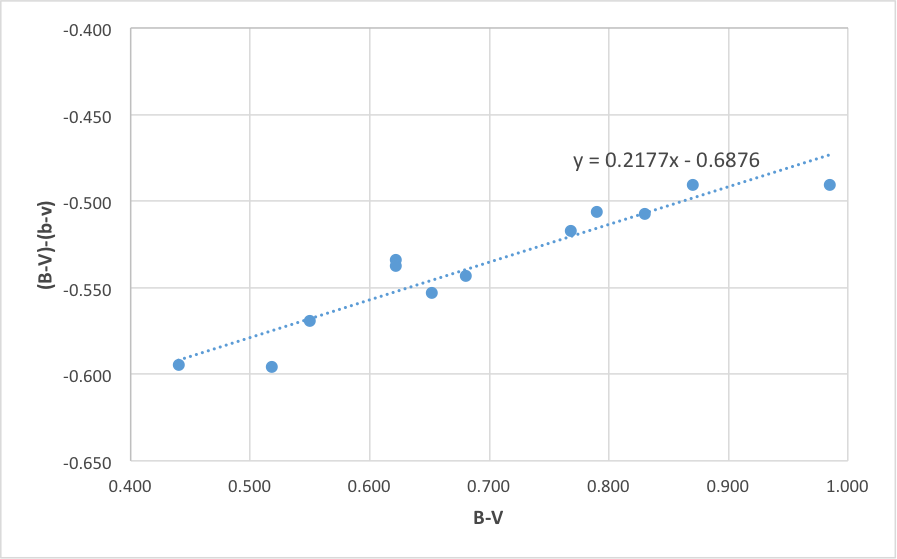
The following summarises attempts to determine magnitude and colour transform coefficients for photometric projects (using the "UBVRI" colour system) undertaken at D21.
The first attempts use Landolt equatorial fields near transit, which have since been found to contain some errors in published values, or more accurately - variations in on-line sources of the Landolt catalogues.
Test 1
Date: 7th July 2013
Landolt field: centered on SA 104-440
Exposures: B 75s x 2 (averaged), V 30s x 2 (averaged)
The table below comprises measured and calculated values from 11 reference stars in the Landolt field (v has been corrected to match the exposure for b by 2.5x).
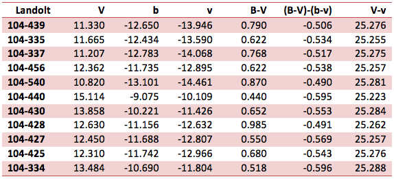
Figure 1 shows the plot for determining the colour transform coefficient (standard minus measured vs standard colour index). The plot uses raw instrumental magnitudes for b and v.
Figure 2 shows a plot for determining the magnitude transform (standard minus instrumental magnitude vs standard colour). Once again, the plot uses raw instrumental magnitudes for b and v.
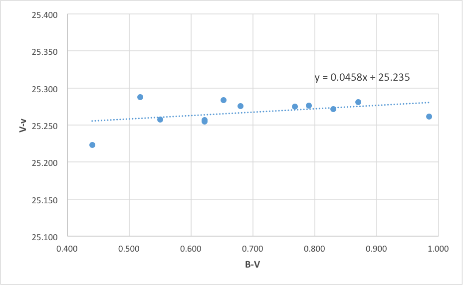
Both plots appear to provide good linear correlation for calculation of the colour and magnitude transforms.
Test 2
The second test is centred on Landolt SA 105-256 near transit. Exposures are identical to those used in Test 1. The table below comprises measured and calculated values from 13 reference stars in the Landolt field (v has been corrected to match the exposure for b by 2.5x)
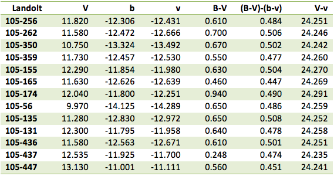
The data exhibits significant scatter compared to Test 1. Figure 3 shows a the line of best fit and equation for deriving the colour transform. The results differ markedly from those in Test 1.
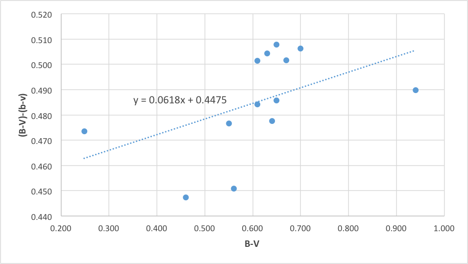
Figure 4 shows a line of best fit for deriving the magnitude transform similar to the results in Test 1. However the plot is less 'convincing' despite the slightly larger sample size.
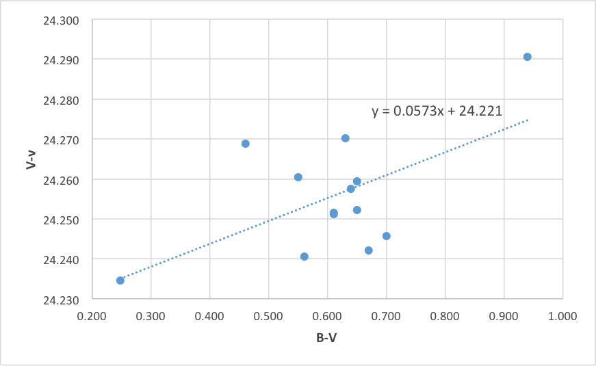
Fearing some discrepancy in the on-line published values for Landolt, additional tests were undertaken using both Graham reference stars and E Regions from the Cape standards.
Test 3
The third test uses a combination of southern "E fields" from the Cape Standards and a selection of "Graham" stars.
The E Field test uses stars from three adjacent fields. These brighter stars from the Cape Standards required shorter exposures - 10 seconds for B and 2 seconds for V. An average of two exposures per star was used to provide the raw instrumental magnitude.
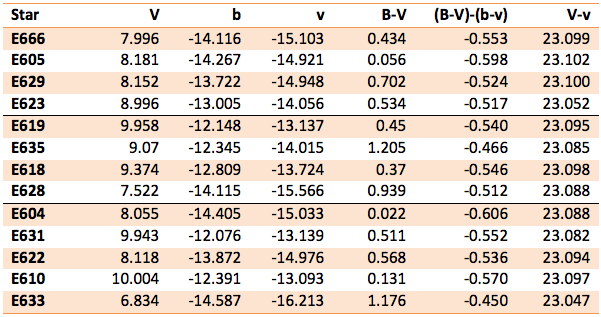
Figure 5 shows the plot for determining the colour transform coefficient:
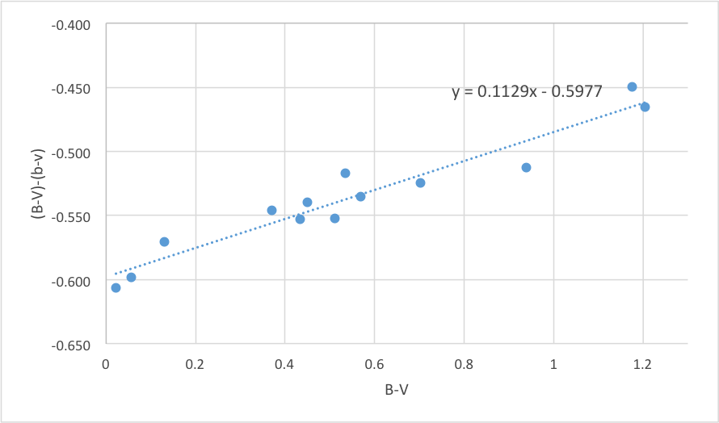
Figure 6 shows the plot for determining the magnitude transform coefficient:
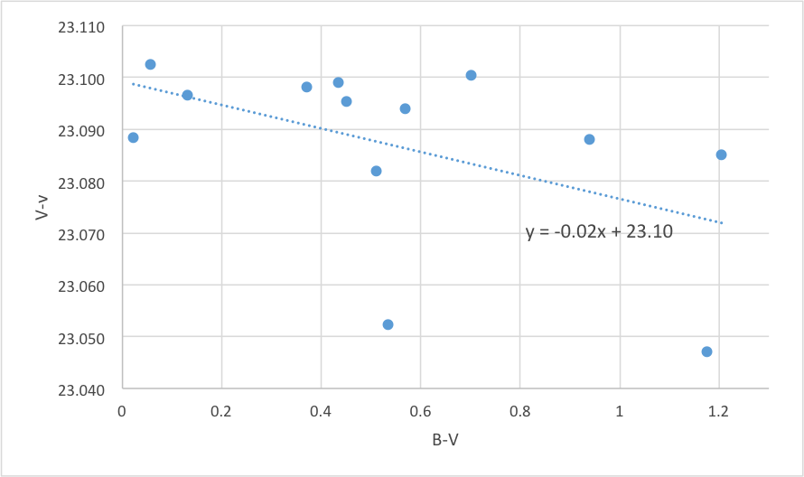
Graham Stars
An additional six fainter stars from those measured by Graham were added to the southern tests. The data appears to correlate well between the two.
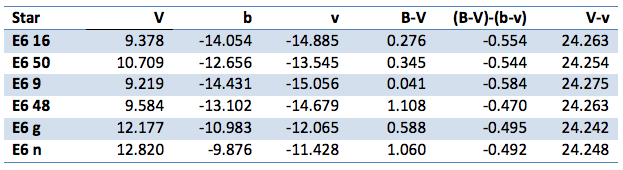
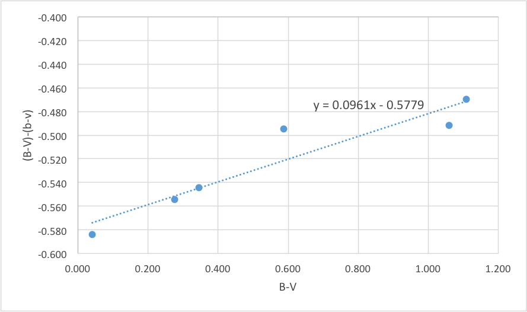
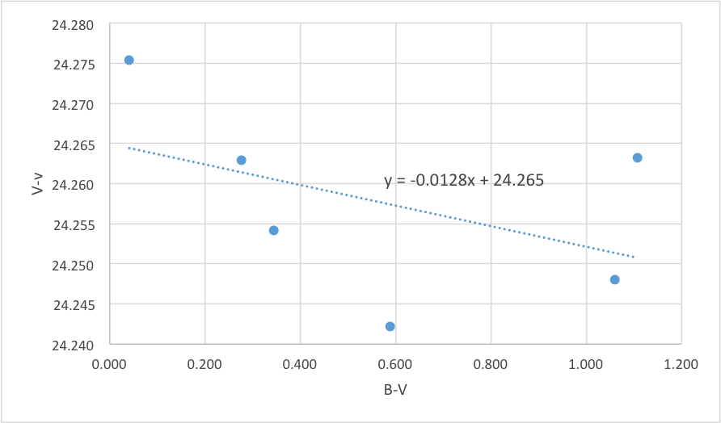